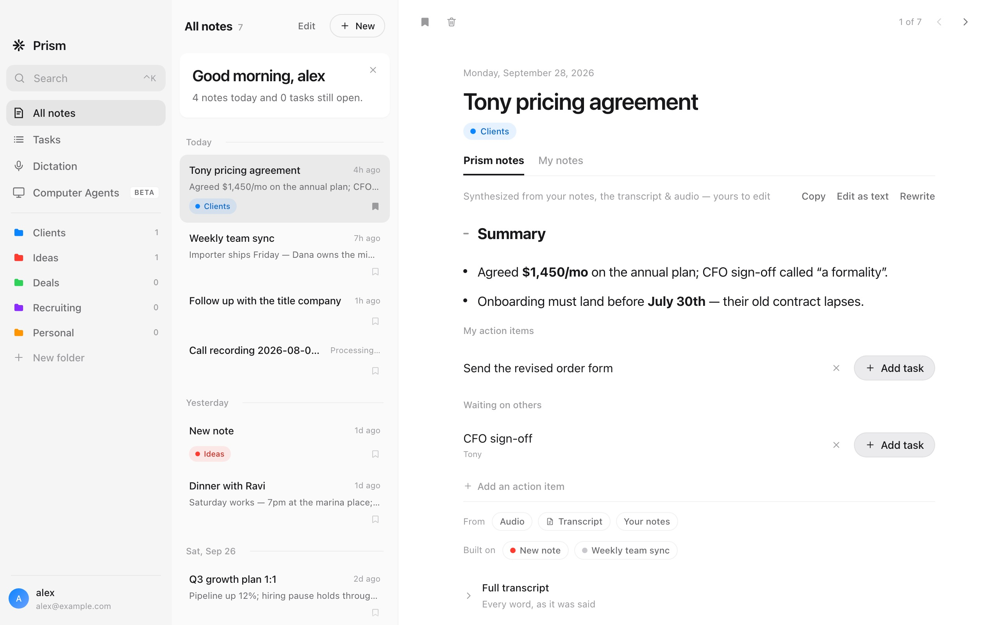

Tasks
What you agreed to, pulled out of the conversation.
Action items become tasks with a date and a link back to the note. Send them to Microsoft To Do if that is where you live.
Invite only · Free · Mac and Windows
Prism records from your own computer and writes the note seconds after you hang up. Nothing joins the meeting.

The Prism app on Mac, with sample notes.
Meeting detection
The card Prism shows when a meeting starts. Press Start recording.
Both sides, no bot
Prism records your mic and what you hear as separate tracks. It knows who said what without guessing, and the other side sees nothing.
Zoom, Meet, Teams, a phone on speaker, or the room.
The note
What was agreed, what is still open, and the date everything else hangs off.
Who owes what, by when. Yours become tasks; theirs stay on the note so you can ask about them later.
Two channels, so each line is labelled by where it came from. What you typed during the call stays exactly as you typed it.
Tasks
Action items become tasks with a date and a link back to the note. Send them to Microsoft To Do if that is where you live.
Folders
Drag a note into a folder or let Prism file it. Tinted tags, one level of subfolders, nothing to set up.
Dictation
Mac and Windows.
Computer Agents · Beta
Beta — sends, deletes and closes wait for you. Computer Agents runs in Prism for Mac.
Privacy
A notetaker that hears your calls owes you straight answers.
Devices
Notes, folders and tasks stay in step across your devices through your account. Sign in once.
macOS 13 and later. Apple silicon and Intel.
Windows 10 and 11.
A companion app is in early access.
Outlook, calendar links, Microsoft To Do.
Prism is free while it is invite only. We let people in as we scale, in the order they asked.
No. Prism records from your own computer. Nothing joins the meeting and nothing is announced to the other side.
Anything you can hear on your machine, plus your mic. Zoom, Meet, Teams, a phone on speaker, or a conversation in the room. Only when you press record.
It streams through our relay to be transcribed and is not stored on our servers. The recording stays on your computer with the note. Transcripts and notes are kept in your account so your devices stay in step.
Recording and your own typed notes do. The transcript and the write-up need a connection, and they finish when you are back online.
Good on a clear call, weaker with heavy crosstalk or a bad speakerphone. Unfamiliar names are the usual miss. Every note keeps its transcript, so you can always check what was said.
Prism is distributed outside the Microsoft Store, so SmartScreen shows a one-time warning. Choose More info, then Run anyway.
There is a companion app in early access. It is not on the App Store or TestFlight yet, and we would rather say so than imply otherwise.
Transcript quality falls apart if we grow faster than we can check it. Keys go out in weekly batches, in the order people asked.